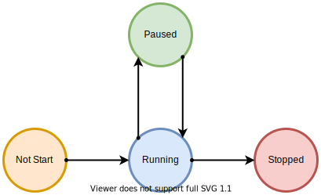
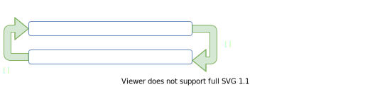
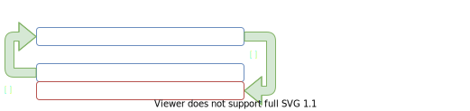

<!DOCTYPE html>
<html lang="zh-cn">

<head>
<meta charset="utf-8">
<meta name="HandheldFriendly" content="True">
<meta name="MobileOptimized" content="320">
<meta name="viewport" content="width=device-width, initial-scale=1.0">


    <meta property="twitter:site" content="@linw1995">

<meta property="og:site_name" content="linw1995" />
<meta property="og:locale" content="zh-cn" />
<meta property="og:type" content="article" />
<meta property="og:url" content="https://linw1995.com/blog/%E6%B5%85%E8%B0%88-Python-%E7%94%9F%E6%88%90%E5%99%A8/" />
<meta property="og:title" content="浅谈 Python 生成器" />
<meta property="twitter:title" content="浅谈 Python 生成器">

    <meta property="og:image" content="/img/banner.png">
    <meta property="twitter:card" content="summary">
    <meta property="twitter:image" content="/img/banner.png">

<meta property="og:description" content="生成器是本人最喜欢的语法糖之一。通过简单 `yield` 表达式即可实现各种奇妙用法。">
<meta property="twitter:description" content="生成器是本人最喜欢的语法糖之一。通过简单 `yield` 表达式即可实现各种奇妙用法。">

<title>


     linw1995 - 浅谈 Python 生成器 

</title>
<link rel="canonical" href="https://linw1995.com/blog/%E6%B5%85%E8%B0%88-Python-%E7%94%9F%E6%88%90%E5%99%A8/">


<style media="screen">
  @font-face {
  font-family: 'Nexa Bold';
  src: url('/fonts/Nexa Bold.otf');
}

html, body, div, span, applet, object, iframe,
h1, h2, h3, h4, h5, h6, p, blockquote, pre,
a, abbr, acronym, address, big, cite, code,
del, dfn, em, img, ins, kbd, q, s, samp,
small, strike, strong, sub, tt, var,
b, u, i, center,
dl, dt, dd, ol, ul, li,
fieldset, form, label, legend,
table, caption, tbody, tfoot, thead, tr, th, td,
article, aside, canvas, details, embed,
figure, figcaption, footer, header, hgroup,
menu, nav, output, ruby, section, summary,
time, mark, audio, video {
  margin: 0;
  padding: 0;
  border: 0;
  font-size: 100%;
  font: inherit;
  vertical-align: baseline;
}
/* HTML5 display-role reset for older browsers */
article, aside, details, figcaption, figure,
footer, header, hgroup, menu, nav, section, div.column {
  display: block;
}
body {
  line-height: 1;
}
ol, ul {
  list-style: none;
}
blockquote, q {
  quotes: none;
}
blockquote:before, blockquote:after,
q:before, q:after {
  content: '';
  content: none;
}
table {
  border-collapse: collapse;
  border-spacing: 0;
}

*,
*:before,
*:after {
  box-sizing: border-box;
}
a,
a:visited,
a:focus,
a:active {
  text-decoration: none;
}
html {
  height: 100%;
  font-size: 16px;
}
body {
  display: -webkit-flex;
  display: -moz-flex;
  display: -ms-flexbox;
  display: -ms-flex;
  display: flex;
  -webkit-flex-direction: column;
  -moz-flex-direction: column;
  -ms-flex-direction: column;
  flex-direction: column;
  -webkit-align-items: center;
  -moz-align-items: center;
  -ms-align-items: center;
  align-items: center;
  -webkit-justify-content: flex-start;
  -moz-justify-content: flex-start;
  -ms-justify-content: flex-start;
  justify-content: flex-start;
  width: 100%;
  min-height: 100%;
  font-weight: 400;
  font-family: 'Helvetica Neue', 'Arial', sans-serif;
  color: #111111;
  line-height: 1.6;
  text-rendering: optimizeLegibility !important;
}
.icon {
  text-rendering: geometricPrecision !important;
}
section {
  display: -webkit-flex;
  display: -moz-flex;
  display: -ms-flexbox;
  display: -ms-flex;
  display: flex;
  -webkit-justify-content: center;
  -moz-justify-content: center;
  -ms-justify-content: center;
  justify-content: center;
  -webkit-align-items: center;
  -moz-align-items: center;
  -ms-align-items: center;
  align-items: center;
  width: 100%;
}
div.column {
  display: -webkit-flex;
  display: -moz-flex;
  display: -ms-flexbox;
  display: -ms-flex;
  display: flex;
  -webkit-justify-content: center;
  -moz-justify-content: center;
  -ms-justify-content: center;
  justify-content: center;
  -webkit-align-items: center;
  -moz-align-items: center;
  -ms-align-items: center;
  align-items: center;
  width: 100%;
}
.container {
  display: -webkit-flex;
  display: -moz-flex;
  display: -ms-flexbox;
  display: -ms-flex;
  display: flex;
  width: 100%;
}
div.header .container {
  -webkit-align-items: center;
  -moz-align-items: center;
  -ms-align-items: center;
  align-items: center;
  -webkit-justify-content: center;
  -moz-justify-content: center;
  -ms-justify-content: center;
  justify-content: center;
}
div.header .content {
  display: -webkit-flex;
  display: -moz-flex;
  display: -ms-flexbox;
  display: -ms-flex;
  display: flex;
  -webkit-flex-direction: column;
  -moz-flex-direction: column;
  -ms-flex-direction: column;
  flex-direction: column;
  -webkit-align-items: center;
  -moz-align-items: center;
  -ms-align-items: center;
  align-items: center;
}
div.header .container .logo {
  
  max-width: 100px;
  
  margin-left: -2em;
}
div.header .name {
  padding-top: 20px;
  font-size: 28px;
  font-family: 'Nexa Bold', 'Helvetica Neue', 'Arial', sans-serif;
  letter-spacing: -0.005rem;
  
  text-transform: uppercase;
  
  -moz-osx-font-smoothing: grayscale;
  -webkit-font-smoothing: antialiased;
  font-smoothing: antialiased;
  color: #333333;
}
div.header nav {
  margin-bottom: 16px;
}
div.header nav ul {
  list-style: none;
  text-align: center;
  display: -webkit-inline-flex;
  display: -moz-inline-flex;
  display: -ms-inline-flexbox;
  display: -ms-inline-flex;
  display: inline-flex;
}
div.header nav ul li {
  margin-left: 6px;
  margin-right: 6px;
}
div.header nav ul li:first-child {
  margin-left: 0;
}
div.header nav ul li:last-child {
  margin-right: 0;
}
div.header nav ul a {
  color: #555555;
  font-weight: 400;
  font-size: 14px;
  text-transform: uppercase;
  font-family: 'Helvetica Neue', 'Arial', sans-serif;
  -webkit-transition: color 0.1s cubic-bezier(0.47, 0, 0.75, 0.72);
  -moz-transition: color 0.1s cubic-bezier(0.47, 0, 0.75, 0.72);
  -ms-transition: color 0.1s cubic-bezier(0.47, 0, 0.75, 0.72);
  -o-transition: color 0.1s cubic-bezier(0.47, 0, 0.75, 0.72);
}
div.header nav ul a:hover {
  color: #111111;
}
div.footer .container {
  -webkit-align-items: center;
  -moz-align-items: center;
  -ms-align-items: center;
  align-items: center;
  -webkit-justify-content: center;
  -moz-justify-content: center;
  -ms-justify-content: center;
  justify-content: center;
  flex-direction: column-reverse;
  width: 100%;
  text-align: center;
}
div.footer .container a {
  font-size: 14px;
  margin-left: 6px;
  margin-right: 6px;
  opacity: 0.6;
  -webkit-transition: opacity 0.1s cubic-bezier(0.47, 0, 0.75, 0.72);
  -moz-transition: opacity 0.1s cubic-bezier(0.47, 0, 0.75, 0.72);
  -ms-transition: opacity 0.1s cubic-bezier(0.47, 0, 0.75, 0.72);
  -o-transition: opacity 0.1s cubic-bezier(0.47, 0, 0.75, 0.72);
}
div.footer .container a:first-child {
  margin-left: 0;
}
div.footer .container a:last-child {
  margin-right: 0;
}
div.footer .container a:hover {
  opacity: 0.8;
}
div.footer .container a .icon {
  width: 16px;
  height: 16px;
}
div.footer .container .copyright {
  flex-grow: 0.5;
  text-align: start;
}
div.footer .container .icons {
  flex-grow: 0.5;
  text-align: end;
}
div.main .container {
  -webkit-align-items: center;
  -moz-align-items: center;
  -ms-align-items: center;
  align-items: center;
  -webkit-justify-content: flex-start;
  -moz-justify-content: flex-start;
  -ms-justify-content: flex-start;
  justify-content: flex-start;
}
div.main .content {
  color: #111111;
  font-size: 16px;
}
div.main .content .title-container {
  display: -webkit-flex;
  display: -moz-flex;
  display: -ms-flexbox;
  display: -ms-flex;
  display: flex;
  -webkit-justify-content: space-between;
  -moz-justify-content: space-between;
  -ms-justify-content: space-between;
  justify-content: space-between;
}
div.main .content .posts {
  
  
}
div.main .content .page-heading {
  font-size: 20px;
  font-weight: 700;
  font-family: 'Helvetica Neue', 'Arial', sans-serif;
  letter-spacing: -0.005rem;
  text-transform: uppercase;
  -moz-osx-font-smoothing: grayscale;
  -webkit-font-smoothing: antialiased;
  font-smoothing: antialiased;
  color: #333333;
  margin-bottom: 16px;
}
div.main .content .front-matter .page-heading {
  margin-bottom: 0;
}
div.main .content .front-matter .meta {
  font-size: 14px;
  color: #666666;
  display: -webkit-flex;
  display: -moz-flex;
  display: -ms-flexbox;
  display: -ms-flex;
  display: flex;
  margin-bottom: 32px;
}
div.main .content .front-matter .date,
div.main .content .front-matter .author,
div.main .content .front-matter .tags,
div.main .content .front-matter .word-count,
div.main .content .front-matter .middot:before {
  display: none;
}
div.main .content .front-matter .middot:before {
  font-size: 6px;
  margin: 0 6px;
  vertical-align: middle;
  content: "•";
}
div.main .content .front-matter .tags ul {
  display: -webkit-flex;
  display: -moz-flex;
  display: -ms-flexbox;
  display: -ms-flex;
  display: flex;
  -webkit-flex-direction: row;
  -moz-flex-direction: row;
  -ms-flex-direction: row;
  flex-direction: row;
  -webkit-align-items: center;
  -moz-align-items: center;
  -ms-align-items: center;
  align-items: center;
}
div.main .content .front-matter .tags ul li {
  -webkit-transition: opacity 0.1s cubic-bezier(0.47, 0, 0.75, 0.72);
  -moz-transition: opacity 0.1s cubic-bezier(0.47, 0, 0.75, 0.72);
  -ms-transition: opacity 0.1s cubic-bezier(0.47, 0, 0.75, 0.72);
  -o-transition: opacity 0.1s cubic-bezier(0.47, 0, 0.75, 0.72);
}
div.main .content .front-matter .tags ul li:hover {
  opacity: 0.7;
}
div.main .content .front-matter .tags ul li a {
  color: #666666;
}

div.main .container.f04 {
  -webkit-justify-content: center;
  -moz-justify-content: center;
  -ms-justify-content: center;
  justify-content: center;
}
div.main .container.f04 .content {
  display: -webkit-flex;
  display: -moz-flex;
  display: -ms-flexbox;
  display: -ms-flex;
  display: flex;
  -webkit-flex-direction: column;
  -moz-flex-direction: column;
  -ms-flex-direction: column;
  flex-direction: column;
  -webkit-align-items: center;
  -moz-align-items: center;
  -ms-align-items: center;
  align-items: center;
}
div.main .container.f04 .content .num {
  margin: 30px 0px 30px 0;
  font-weight: 400;
  font-family: 'Helvetica Neue', 'Arial', sans-serif;
  font-size: 50px;
}
div.main .container.f04 .content .detail {
  margin-bottom: 40px;
}
div.main .container .content .groupby {
  margin-top: 1em;
  padding-left: 0.5em;
}
div.main .container .content .post-item {
  display: -webkit-flex;
  display: -moz-flex;
  display: -ms-flexbox;
  display: -ms-flex;
  display: flex;
  -webkit-align-items: center;
  -moz-align-items: center;
  -ms-align-items: center;
  align-items: center;
  display: list-item;
  list-style: disc inside;
}
div.main .container .content .post-item .meta {
  font-size: 14px;
  color: #666666;
  display: none;
  min-width: 100px;
}
div.main .container .content .see-more {
  font-style: italic;
  float: right;
  font-size: 0.9em;
  margin-top: 2em;
  color: #313537;
}
div.main .container .content .see-more:hover {
  color: #666;
}
section {
  padding: 0 16px;
}
div.column {
  padding: 0 16px;
}
div.header {
  padding-top: 10px;
}
div.header-home {
  padding-top: 36px;
}
div.main {
  padding-top: 32px;
}
div.main .container .content .post-item .meta {
    display: block;
}
div.main .container .content .post-item {
    display: flex;
    list-style: none;
}
a {
  color: #428bca;
  -webkit-transition: color 0.1s cubic-bezier(0.47, 0, 0.75, 0.72);
  -moz-transition: color 0.1s cubic-bezier(0.47, 0, 0.75, 0.72);
  -ms-transition: color 0.1s cubic-bezier(0.47, 0, 0.75, 0.72);
  -o-transition: color 0.1s cubic-bezier(0.47, 0, 0.75, 0.72);
}
a:hover {
  color: #2a6496;
}
img {
  max-width: 100%;
}
div.main .content {
    width: 100%;
}
div.main .content .markdown {
  font-size: 1.1em;
  line-height: 1.75em;
  color: #313537;
  font-family: serif;
  font-weight: 300;
}
div.main .content .markdown h1,
div.main .content .markdown h2,
div.main .content .markdown h3,
div.main .content .markdown h4,
div.main .content .markdown h5,
div.main .content .markdown h6 {
  font-size: 22px;
  font-family: 'Helvetica Neue', 'Arial', sans-serif;
  letter-spacing: -0.005rem;
  font-weight: 700;
  -moz-osx-font-smoothing: grayscale;
  -webkit-font-smoothing: antialiased;
  font-smoothing: antialiased;
  color: #333333;
  text-transform: none;
  margin-top: 1.75rem;
}
div.main .content .markdown h1 {
  font-size: 1.75rem;
  margin-bottom: 2rem;
}
div.main .content .markdown h2 {
  font-size: 1.5rem;
  margin-bottom: 1.5rem;
}
div.main .content .markdown h3 {
  font-size: 1em;
  margin-bottom: 1rem;
}
div.main .content .markdown h4,
div.main .content .markdown h5,
div.main .content .markdown h6 {
  font-size: 1rem;
  margin-bottom: 1rem;
  letter-spacing: none;
}
div.main .content .markdown code,
div.main .content .markdown pre {
  font-family: 'Menlo', monospace;
  font-size: 0.98rem;
  background-color: #f7f7f7;
}
div.main .content .markdown code {
  /* enclosed by single backtick (`) */
  padding: .15em .5em;
  border-radius: 2px;
}
div.main .content .markdown pre {
  /* Hugo specific: consider using the 'highlight' shortcode */
  display: block;
  margin-top: 1rem;
  margin-bottom: 2rem;
  padding: 1rem;
  line-height: 1.5em;
  white-space: pre;
  word-break: break-all;
  word-wrap: break-word;
}
div.main .content .markdown pre code {
  /* enclosed by 4 backticks (````) */
  padding: 0;
  font-size: 0.9rem;
}
div.main .content .markdown a code {
  color: #428bca !important;
}
div.main .content .markdown a code:hover {
  text-decoration: underline;
}
div.main .content .markdown p {
  
  text-align: justify;
  
  margin-top: 0;
  margin-bottom: 1em;
}
div.main .content .markdown ul,
div.main .content .markdown ol,
div.main .content .markdown dl {
  margin-top: 1rem;
  margin-bottom: 2rem;
}
div.main .content .markdown dt {
  font-weight: bold;
}
div.main .content .markdown dd {
  margin-bottom: .5rem;
}
div.main .content .markdown ul {
  list-style-type: disc;
  list-style-position: outside;
  margin-bottom: 1.25rem;
}
div.main .content .markdown ol {
  list-style-type: decimal;
  margin-bottom: 1.25rem;
}
div.main .content .markdown li {
  margin-left: 2em;
}
div.main .content .markdown em {
  font-style: italic;
}
div.main .content .markdown strong {
  font-weight: 700;
}
div.main .content .markdown hr {
  position: relative;
  margin: 1.75rem 0;
  border: 0;
  border-top: 1px solid #808080;
  border-top: 1px solid #999999;
}
div.main .content .markdown abbr {
  font-size: 0.85rem;
  font-weight: bold;
  color: #666666;
  text-transform: uppercase;
}
div.main .content .markdown abbr[title] {
  cursor: help;
  border-bottom: 1px dotted #808080;
}
div.main .content .markdown blockquote {
  padding: .5rem 1rem;
  margin: .8rem 0;
  color: #7a7a7a;
  border-left: .25rem solid #e5e5e5;
}
div.main .content .markdown blockquote p:last-child {
  margin-bottom: 0;
}
div.main .content .markdown figure {
  width: 100%;
  background: #fff;
  margin-bottom: 1em;
}
div.main .content .markdown figure img {
  width: 100%;
  height: auto;
  max-width: 100%;
  display: block;
  position: static;
  margin: auto;
}
div.main .content .markdown table {
  margin-bottom: 1rem;
  width: 100%;
  border: 1px solid #e5e5e5;
  border-collapse: collapse;
}
div.main .content .markdown td,
div.main .content .markdown th {
  padding: .25rem .5rem;
  border: 1px solid #e5e5e5;
}
div.main .content .markdown tbody tr:nth-child(odd) td,
div.main .content .markdown tbody tr:nth-child(odd) th {
  background-color: #f7f7f7;
}
div.main .content .markdown .footnotes ol {
  list-style-type: decimal;
  margin-left: 16px;
}
div.main .content .markdown .footnotes li {
  list-style-type: unset;
}
div.main .content .markdown .footnote-ref {
  font-size: 0.7em;
}
div.main .content .navigation {
  display: -webkit-flex;
  display: -moz-flex;
  display: -ms-flexbox;
  display: -ms-flex;
  display: flex;
  -webkit-flex-direction: column;
  -moz-flex-direction: column;
  -ms-flex-direction: column;
  flex-direction: column;
  -webkit-align-items: center;
  -moz-align-items: center;
  -ms-align-items: center;
  align-items: center;
  padding: 2em;
}
div.main .content .navigation div {
  display: -webkit-flex;
  display: -moz-flex;
  display: -ms-flexbox;
  display: -ms-flex;
  display: flex;
  -webkit-flex-direction: row;
  -moz-flex-direction: row;
  -ms-flex-direction: row;
  flex-direction: row;
  -webkit-align-items: center;
  -moz-align-items: center;
  -ms-align-items: center;
  align-items: center;
  margin-top: 1em;
}
div.main .content .navigation .icon {
  width: 16px;
  height: 16px;
}
div.main .content .navigation a {
  width: 250px;
  margin: 0 1em;
  text-align: center;
  font-style: italic;
  color: #313537;
}
div.main .content .share, div.main .content .share div {
  display: -webkit-flex;
  display: -moz-flex;
  display: -ms-flexbox;
  display: -ms-flex;
  display: flex;
  -webkit-flex-direction: row;
  -moz-flex-direction: row;
  -ms-flex-direction: row;
  flex-direction: row;
  -webkit-align-items: center;
  -moz-align-items: center;
  -ms-align-items: center;
  align-items: center;
  justify-content: center;
}
div.main .content .share {
  background-color: rgba(152, 152, 152, 0.07);
  padding: 1em 0;
}
div.main .content .share a {
  margin: 0 6px;
}
kbd {
  padding: 0.1em 0.6em;
  border: 1px solid #ccc;
  font-size: 11px;
  font-family: Arial,Helvetica,sans-serif;
  background-color: #f7f7f7;
  color: #333;
  -moz-box-shadow: 0 1px 0px rgba(0, 0, 0, 0.2),0 0 0 2px #ffffff inset;
  -webkit-box-shadow: 0 1px 0px rgba(0, 0, 0, 0.2),0 0 0 2px #ffffff inset;
  box-shadow: 0 1px 0px rgba(0, 0, 0, 0.2),0 0 0 2px #ffffff inset;
  -moz-border-radius: 3px;
  -webkit-border-radius: 3px;
  border-radius: 3px;
  display: inline-block;
  margin: 0 0.1em;
  text-shadow: 0 1px 0 #fff;
  line-height: 1.4;
  white-space: nowrap;
}

/* Fonts */


.wf-raleway-n4-active body,
.wf-raleway-n4-active div.header nav ul a,
.wf-raleway-n7-active div.main .content .page-heading,
.wf-raleway-n2-active div.main .container.f04 .content .num,
.wf-raleway-n7-active div.main .content .markdown h1,
.wf-raleway-n7-active div.main .content .markdown h2,
.wf-raleway-n7-active div.main .content .markdown h3,
.wf-raleway-n7-active div.main .content .markdown h4,
.wf-raleway-n7-active div.main .content .markdown h5,
.wf-raleway-n7-active div.main .content .markdown h6 {
      font-family: 'Raleway';
}

.wf-merriweather-n3-active div.main .content .markdown {
      font-family: 'Merriweather';
}

.wf-ubuntu-mono-n4-active div.main .content .markdown code,
.wf-ubuntu-mono-n4-active div.main .content .markdown pre {
      font-family: 'Ubuntu Mono';
}


</style>
<style media="(min-width: 600px)">
  body {
-webkit-justify-content: center;
-moz-justify-content: center;
-ms-justify-content: center;
justify-content: center;
}
.non-narrow.zero-top-spacing {
padding-top: 0 !important;
}
section {
padding: 0 16px;
margin-left: 100px;
margin-right: 100px;

max-width: 750px;

}
div.column {
padding: 0 16px;

max-width: 750px;

}
div.header {
background-color: transparent;
}
div.header .container {
-webkit-justify-content: flex-start;
-moz-justify-content: flex-start;
-ms-justify-content: flex-start;
justify-content: flex-start;
}
div.header .container .logo {
margin: 0;
}
div.header-home .container .logo {
max-width: 216px;
margin-left: 24px;
}
div.header-home .name-home {
padding-top: 30px;
font-size: 40px;
}
div.header-home nav ul a {
font-size: 18px;
}
div.header .content {
-webkit-align-items: flex-start;
-moz-align-items: flex-start;
-ms-align-items: flex-start;
align-items: flex-start;
}
div.header .name {
color: #333333;
}
div.header nav {
font-size: 14px;
margin-bottom: 0;
}
div.header nav ul {
text-align: left;
}
div.header nav ul a {
color: #666666;
}
div.header nav ul a:hover {
color: #333333;
}
div.footer {
background-color: transparent;
}
div.footer .container {
flex-direction: row;
}
div.footer .container a {
margin-left: 3px;
margin-right: 3px;
color: #666666;
}
div.footer .container a:hover {
color: #333333;
}
div.footer .container a .icon {
font-size: 18px;
}
div.footer .container a .icon.larger {
font-size: 20px;
}
div.main .content .front-matter .date,
div.main .content .front-matter .author,
div.main .content .front-matter .tags,
div.main .content .front-matter .word-count,
div.main .content .front-matter .middot:before {
display: initial;
}
div.main .container.f04 {
-webkit-justify-content: flex-start;
-moz-justify-content: flex-start;
-ms-justify-content: flex-start;
justify-content: flex-start;
}
div.main .container.f04 .content {
-webkit-align-items: flex-start;
-moz-align-items: flex-start;
-ms-align-items: flex-start;
align-items: flex-start;
}
div.main .container.f04 .content .num {
margin: 0 0 10px 0;
font-size: 32px;
}
div.main .container.f04 .content .detail {
margin-bottom: 30px;
}
.container {
padding: 0 30px;
}
div.header {
padding-top: 60px;
padding-bottom: 60px;
}
div.footer {
padding-top: 60px;
padding-bottom: 60px;
}
div.main {
padding-top: 0;
}
div.main .content {
  
  font-size: 16px;
  
}
div.main .container .content .post-item {
display: flex;
list-style: none;
padding-left: 1.5em;
}
div.main .container .content .post-item .meta {
display: block;
}
div.main .content .markdown blockquote {
padding-right: 5rem;
padding-left: 1.25rem;
}
div.main .content .navigation {
-webkit-flex-direction: row;
-moz-flex-direction: row;
-ms-flex-direction: row;
flex-direction: row;
}
div.main .content .navigation div {
margin-top: 0em;
}

</style>
<style media="(min-width: 769px)">
  div.main .content .markdown figure {
width: 110%;
margin-left: -4%;
}
div.main .content .markdown img {
max-width: 110%;
width: 110%;
margin-left: -4%;
}
div.main .content .markdown pre {
width: 110%;
margin-left: -4%;
}

</style>

<noscript>
  <link href="https://fonts.googleapis.com/css?family=Raleway:400,600,700" rel="stylesheet">
  <link href="https://fonts.googleapis.com/css?family=Merriweather:300,300i,700,700i" rel="stylesheet">
  <link href="https://fonts.googleapis.com/css?family=Ubuntu+Mono:400,700" rel="stylesheet">
</noscript>


  <style type="text/css" media="screen">
    .hljs{display:block;background:white;padding:0.5em;color:#333333;overflow-x:auto}.hljs-comment,.hljs-meta{color:#969896}.hljs-string,.hljs-variable,.hljs-template-variable,.hljs-strong,.hljs-emphasis,.hljs-quote{color:#df5000}.hljs-keyword,.hljs-selector-tag,.hljs-type{color:#a71d5d}.hljs-literal,.hljs-symbol,.hljs-bullet,.hljs-attribute{color:#0086b3}.hljs-section,.hljs-name{color:#63a35c}.hljs-tag{color:#333333}.hljs-title,.hljs-attr,.hljs-selector-id,.hljs-selector-class,.hljs-selector-attr,.hljs-selector-pseudo{color:#795da3}.hljs-addition{color:#55a532;background-color:#eaffea}.hljs-deletion{color:#bd2c00;background-color:#ffecec}.hljs-link{text-decoration:underline}
  </style>


  <style type="text/css" media="screen">
    .progressive{overflow:hidden;position:relative;background:#efefef}.progressive__img{width:100%;height:100%;transform:translateZ(0)}.progressive--not-loaded{filter:blur(30px)}.progressive--is-loaded{filter:blur(20px);animation:a .5s both}@keyframes a{0%{filter:blur(20px)}to{filter:blur(0)}}

  </style>


  <style type="text/css" media="screen">
    /*!
 * Social Share Kit v1.0.7 (http://socialsharekit.com)
 * Copyright 2015 Social Share Kit / Kaspars Sprogis.
 * Licensed under Creative Commons Attribution-NonCommercial 3.0 license:
 * https://github.com/darklow/social-share-kit/blob/master/LICENSE
 * ---
 */@font-face{font-family:'social-share-kit';src:url('/fonts/social-share-kit.eot');src:url('/fonts/social-share-kit.eot?#iefix') format('embedded-opentype'),url('/fonts/social-share-kit.woff') format('woff'),url('/fonts/social-share-kit.ttf') format('truetype'),url('/fonts/social-share-kit.svg#social-share-kit') format('svg');font-weight:normal;font-style:normal}.ssk:before{display:inline-block;font-family:"social-share-kit" !important;font-style:normal !important;font-weight:normal !important;font-variant:normal !important;text-transform:none !important;speak:none;line-height:1;-webkit-font-smoothing:antialiased;-moz-osx-font-smoothing:grayscale}.ssk-facebook:before{content:"a";text-indent:4px;margin-right:-4px}.ssk-twitter:before{content:"b"}.ssk-google-plus:before{content:"v"}.ssk-google-plus-old:before{content:"c"}.ssk-email:before{content:"d";top:-1px;position:relative}.ssk-pinterest:before{content:"e"}.ssk-tumblr:before{content:"f"}.ssk-linkedin:before{content:"g"}.ssk-github:before{content:"h"}.ssk-vk:before{content:"i"}.ssk-instagram:before{content:"j"}.ssk-amazon:before{content:"k"}.ssk-skype:before{content:"s"}.ssk-youtube:before{content:"x"}.ssk-vimeo:before{content:"u"}.ssk-ebay:before{content:"p"}.ssk-apple:before{content:"l"}.ssk-behance:before{content:"q"}.ssk-dribble:before{content:"n"}.ssk-android:before{content:"o"}.ssk-whatsapp:before{content:"m"}.ssk-reddit:before{content:"r"}.ssk-reddit2:before{content:"t"}.ssk-link:before{content:"w"}.ssk{background-color:#757575;color:white;display:inline-block;font-size:22px;line-height:1px;margin-right:2px;margin-bottom:2px;padding:7px;text-align:center;text-decoration:none;transition:background-color .1s;-webkit-transition:background-color .1s;-moz-transition:background-color .1s;-ms-transition:background-color .1s;-o-transition:background-color .1s}.ssk:before,.ssk .glyphicon,.ssk .fa{position:relative;font-size:22px;top:0;vertical-align:middle}.ssk.ssk-xs,.ssk-xs>.ssk{padding:4px}.ssk.ssk-xs:before,.ssk-xs>.ssk:before,.ssk.ssk-xs .glyphicon,.ssk-xs>.ssk .glyphicon,.ssk.ssk-xs .fa,.ssk-xs>.ssk .fa{font-size:15px}.ssk.ssk-sm,.ssk-sm>.ssk{padding:5px}.ssk.ssk-sm:before,.ssk-sm>.ssk:before,.ssk.ssk-sm .glyphicon,.ssk-sm>.ssk .glyphicon,.ssk.ssk-sm .fa,.ssk-sm>.ssk .fa{font-size:20px}.ssk.ssk-lg,.ssk-lg>.ssk{padding:9px}.ssk.ssk-lg:before,.ssk-lg>.ssk:before,.ssk.ssk-lg .glyphicon,.ssk-lg>.ssk .glyphicon,.ssk.ssk-lg .fa,.ssk-lg>.ssk .fa{font-size:28px}.ssk:last-child{margin-right:0}.ssk:hover{background-color:#424242}.ssk:hover,.ssk:focus{color:#fff;text-decoration:none}.ssk.ssk-round,.ssk-round .ssk{border-radius:50%}.ssk.ssk-round:before,.ssk-round .ssk:before{text-indent:0;margin-right:0}.ssk.ssk-rounded,.ssk-rounded .ssk{border-radius:15%}.ssk.ssk-icon{color:#757575;padding:2px;font-size:24px}.ssk.ssk-icon,.ssk.ssk-icon:hover{background-color:transparent}.ssk.ssk-icon:hover{color:#424242}.ssk.ssk-icon.ssk-xs,.ssk-xs>.ssk.ssk-icon{font-size:16px}.ssk.ssk-icon.ssk-sm,.ssk-sm>.ssk.ssk-icon{font-size:20px}.ssk.ssk-icon.ssk-lg,.ssk-lg>.ssk.ssk-icon{font-size:28px}.ssk.ssk-text{overflow:hidden;font-size:17px;line-height:normal;padding-right:10px}.ssk.ssk-text:before,.ssk.ssk-text .glyphicon,.ssk.ssk-text .fa{margin:-7px 10px -7px -7px;padding:7px;background-color:rgba(0,0,0,0.15);vertical-align:bottom;text-indent:0}.ssk-block .ssk.ssk-text{display:block;margin-right:0;text-align:left}.ssk.ssk-text.ssk-xs,.ssk-xs>.ssk.ssk-text{font-size:12px;padding-right:6px}.ssk.ssk-text.ssk-xs:before,.ssk-xs>.ssk.ssk-text:before,.ssk.ssk-text.ssk-xs .glyphicon,.ssk-xs>.ssk.ssk-text .glyphicon,.ssk.ssk-text.ssk-xs .fa,.ssk-xs>.ssk.ssk-text .fa{margin:-4px 6px -4px -4px;padding:4px}.ssk.ssk-text.ssk-sm,.ssk-sm>.ssk.ssk-text{font-size:16px;padding-right:7px}.ssk.ssk-text.ssk-sm:before,.ssk-sm>.ssk.ssk-text:before,.ssk.ssk-text.ssk-sm .glyphicon,.ssk-sm>.ssk.ssk-text .glyphicon,.ssk.ssk-text.ssk-sm .fa,.ssk-sm>.ssk.ssk-text .fa{margin:-5px 7px -5px -5px;padding:5px}.ssk.ssk-text.ssk-lg,.ssk-lg>.ssk.ssk-text{font-size:22px;padding-right:13px}.ssk.ssk-text.ssk-lg:before,.ssk-lg>.ssk.ssk-text:before,.ssk.ssk-text.ssk-lg .glyphicon,.ssk-lg>.ssk.ssk-text .glyphicon,.ssk.ssk-text.ssk-lg .fa,.ssk-lg>.ssk.ssk-text .fa{margin:-9px 13px -9px -9px;padding:9px}.ssk-group,.ssk-sticky{font-size:0}.ssk-sticky{top:0;position:fixed;z-index:2000}.ssk-sticky .ssk{transition:padding .1s ease-out;-webkit-transition:padding .1s ease-out;-moz-transition:padding .1s ease-out;-ms-transition:padding .1s ease-out;-o-transition:padding .1s ease-out;margin:0}@media (min-width:768px){.ssk-sticky.ssk-left .ssk,.ssk-sticky.ssk-right .ssk{display:block;clear:both}.ssk-sticky.ssk-left.ssk-center,.ssk-sticky.ssk-right.ssk-center{top:50%;transform:translateY(-50%);-webkit-transform:translateY(-50%);-moz-transform:translateY(-50%);-ms-transform:translateY(-50%);-o-transform:translateY(-50%)}.ssk-sticky.ssk-left{left:0}.ssk-sticky.ssk-left .ssk{float:left}.ssk-sticky.ssk-left .ssk:hover{padding-left:15px}.ssk-sticky.ssk-right{right:0}.ssk-sticky.ssk-right .ssk{float:right}.ssk-sticky.ssk-right .ssk:hover{padding-right:15px}}.ssk-sticky.ssk-bottom{font-size:0;top:auto;bottom:0}.ssk-sticky.ssk-bottom.ssk-center{left:50%;right:auto;transform:translateX(-50%);-webkit-transform:translateX(-50%);-moz-transform:translateX(-50%);-ms-transform:translateX(-50%);-o-transform:translateX(-50%)}.ssk-sticky.ssk-bottom .ssk{vertical-align:bottom}.ssk-sticky.ssk-bottom .ssk:hover{padding-bottom:15px}.ssk-sticky.ssk-round.ssk-xs .ssk:hover{padding:8px}.ssk-sticky.ssk-round.ssk-sm .ssk:hover{padding:9px}.ssk-sticky.ssk-round .ssk:hover{padding:11px}.ssk-sticky.ssk-round.ssk-lg .ssk:hover{padding:13px}@media (max-width:767px){.ssk-sticky{left:0;right:0;bottom:0;top:auto;width:100%;display:flex !important;flex-direction:row;flex-wrap:nowrap}.ssk-sticky.ssk-sticky-hide-xs{display:none !important}.ssk-sticky .ssk{flex:1;width:auto}.ssk-sticky .ssk .ssk-num{display:none}}.ssk-count{padding-top:20px}.ssk-count .ssk{position:relative}.ssk-count .ssk-num{border-radius:4px;color:#8f8f8f;background-color:rgba(50,50,50,0.03);display:block;font-size:12px;left:0;line-height:20px;position:absolute;right:0;text-align:center;top:-20px}@media (min-width:768px){.ssk-count.ssk-sticky{padding-top:0}.ssk-count.ssk-sticky.ssk-left .ssk-num,.ssk-count.ssk-sticky.ssk-right .ssk-num{top:20%;background-color:transparent}.ssk-count.ssk-sticky.ssk-left .ssk-num{left:100%;margin-left:5px}.ssk-count.ssk-sticky.ssk-right .ssk-num{right:115%;margin-left:-100%;text-align:right}}.ssk-facebook{background-color:#3B5998}.ssk-grayscale>.ssk-facebook{background-color:#757575}.ssk-facebook:hover{background-color:#2d4373}.ssk-facebook:hover{background-color:#2d4373}.ssk-grayscale>.ssk-facebook:hover{background-color:#3B5998}.ssk-facebook.ssk-icon{color:#3B5998}.ssk-facebook.ssk-icon:hover{color:#2d4373}.ssk-facebook.ssk-icon:before{text-indent:0;margin-right:0}.ssk-twitter{background-color:#1DA1F2}.ssk-grayscale>.ssk-twitter{background-color:#757575}.ssk-twitter:hover{background-color:#0c85d0}.ssk-twitter:hover{background-color:#0c85d0}.ssk-grayscale>.ssk-twitter:hover{background-color:#1DA1F2}.ssk-twitter.ssk-icon{color:#1DA1F2}.ssk-twitter.ssk-icon:hover{color:#0c85d0}.ssk-google-plus{background-color:#EA4335}.ssk-grayscale>.ssk-google-plus{background-color:#757575}.ssk-google-plus:hover{background-color:#d62516}.ssk-google-plus:hover{background-color:#d62516}.ssk-grayscale>.ssk-google-plus:hover{background-color:#EA4335}.ssk-google-plus.ssk-icon{color:#EA4335}.ssk-google-plus.ssk-icon:hover{color:#d62516}.ssk-pinterest{background-color:#BD081C}.ssk-grayscale>.ssk-pinterest{background-color:#757575}.ssk-pinterest:hover{background-color:#8c0615}.ssk-pinterest:hover{background-color:#8c0615}.ssk-grayscale>.ssk-pinterest:hover{background-color:#BD081C}.ssk-pinterest.ssk-icon{color:#BD081C}.ssk-pinterest.ssk-icon:hover{color:#8c0615}.ssk-tumblr{background-color:#395773}.ssk-grayscale>.ssk-tumblr{background-color:#757575}.ssk-tumblr:hover{background-color:#283d51}.ssk-tumblr:hover{background-color:#283d51}.ssk-grayscale>.ssk-tumblr:hover{background-color:#395773}.ssk-tumblr.ssk-icon{color:#395773}.ssk-tumblr.ssk-icon:hover{color:#283d51}.ssk-email{background-color:#757575}.ssk-grayscale>.ssk-email{background-color:#757575}.ssk-email:hover{background-color:#5b5b5b}.ssk-email:hover{background-color:#5b5b5b}.ssk-grayscale>.ssk-email:hover{background-color:#757575}.ssk-grayscale>.ssk-email:hover{background-color:#5b5b5b}.ssk-email.ssk-icon{color:#757575}.ssk-email.ssk-icon:hover{color:#5b5b5b}.ssk-vk{background-color:#54769a}.ssk-grayscale>.ssk-vk{background-color:#757575}.ssk-vk:hover{background-color:#425d79}.ssk-vk:hover{background-color:#425d79}.ssk-grayscale>.ssk-vk:hover{background-color:#54769a}.ssk-vk.ssk-icon{color:#54769a}.ssk-vk.ssk-icon:hover{color:#425d79}.ssk-linkedin{background-color:#1c87bd}.ssk-grayscale>.ssk-linkedin{background-color:#757575}.ssk-linkedin:hover{background-color:#156791}.ssk-linkedin:hover{background-color:#156791}.ssk-grayscale>.ssk-linkedin:hover{background-color:#1c87bd}.ssk-linkedin.ssk-icon{color:#1c87bd}.ssk-linkedin.ssk-icon:hover{color:#156791}.ssk-whatsapp{background-color:#34AF23}.ssk-grayscale>.ssk-whatsapp{background-color:#757575}.ssk-whatsapp:hover{background-color:#27851a}.ssk-whatsapp:hover{background-color:#27851a}.ssk-grayscale>.ssk-whatsapp:hover{background-color:#34AF23}.ssk-whatsapp.ssk-icon{color:#34AF23}.ssk-whatsapp.ssk-icon:hover{color:#27851a}.ssk-reddit{background-color:#5f99cf}.ssk-grayscale>.ssk-reddit{background-color:#757575}.ssk-reddit:hover{background-color:#3a80c1}.ssk-reddit:hover{background-color:#3a80c1}.ssk-grayscale>.ssk-reddit:hover{background-color:#5f99cf}.ssk-reddit.ssk-icon{color:#5f99cf}.ssk-reddit.ssk-icon:hover{color:#3a80c1}.ssk-reddit2{background-color:#5f99cf}.ssk-grayscale>.ssk-reddit2{background-color:#757575}.ssk-reddit2:hover{background-color:#3a80c1}.ssk-reddit2:hover{background-color:#3a80c1}.ssk-grayscale>.ssk-reddit2:hover{background-color:#5f99cf}.ssk-reddit2.ssk-icon{color:#5f99cf}.ssk-reddit2.ssk-icon:hover{color:#3a80c1}.ssk-turquoise{background-color:#1abc9c}.ssk-turquoise:hover{background-color:#148f77}.ssk-emerald{background-color:#2ecc71}.ssk-emerald:hover{background-color:#25a25a}.ssk-peter-river{background-color:#3498db}.ssk-peter-river:hover{background-color:#217dbb}.ssk-belize-hole{background-color:#2980b9}.ssk-belize-hole:hover{background-color:#20638f}.ssk-amethyst{background-color:#9b59b6}.ssk-amethyst:hover{background-color:#804399}.ssk-wisteria{background-color:#8e44ad}.ssk-wisteria:hover{background-color:#703688}.ssk-wet-asphalt{background-color:#34495e}.ssk-wet-asphalt:hover{background-color:#222f3d}.ssk-midnight-blue{background-color:#2c3e50}.ssk-midnight-blue:hover{background-color:#1a242f}.ssk-green-sea{background-color:#16a085}.ssk-green-sea:hover{background-color:#107360}.ssk-nephritis{background-color:#27ae60}.ssk-nephritis:hover{background-color:#1e8449}.ssk-sunflower{background-color:#f1c40f}.ssk-sunflower:hover{background-color:#c29d0b}.ssk-orange{background-color:#f39c12}.ssk-orange:hover{background-color:#c87f0a}.ssk-carrot{background-color:#e67e22}.ssk-carrot:hover{background-color:#bf6516}.ssk-pumpkin{background-color:#d35400}.ssk-pumpkin:hover{background-color:#a04000}.ssk-alizarin{background-color:#e74c3c}.ssk-alizarin:hover{background-color:#d62c1a}.ssk-pomegranate{background-color:#c0392b}.ssk-pomegranate:hover{background-color:#962d22}.ssk-clouds{background-color:#cfd9db}.ssk-clouds:hover{background-color:#b1c2c6}.ssk-concrete{background-color:#95a5a6}.ssk-concrete:hover{background-color:#798d8f}.ssk-silver{background-color:#bdc3c7}.ssk-silver:hover{background-color:#a1aab0}.ssk-asbestos{background-color:#7f8c8d}.ssk-asbestos:hover{background-color:#667273}.ssk-dark-gray{background-color:#555}.ssk-dark-gray:hover{background-color:#3b3b3b}.ssk-black{background-color:#333}.ssk-black:hover{background-color:#1a1a1a}

  </style>


  <style type="text/css" media="screen">
    a {
    color: #527fc1f;
}

a:hover {
    color: #1a3152;
}

div.main .content .markdown, div.header .name, div.header nav ul a:hover {
    color: #181d2a;
}

div.header nav ul a {
    color: #6a7a8b;
}

div.main .content .markdown code {
    background-color: #f9f9f9;
    color: #527fc1f;
}

div.main .content .markdown pre, div.main .content .markdown pre code {
    background-color: #272822;
    color: #87a5d2;
}

.hljs, .hljs-subst, .hljs-variable {
    color: #87a5d2;
}

.hljs-type {
    color: #97d28b;
}

.hljs-quote {
    color: #ffcb8d;
}

.hljs-string, .hljs-number, .hljs-selector-id, .hljs-selector-class, .hljs-template-tag, .hljs-deletion {
    color: #96c2d7;
}

.hljs-comment {
    color: #6a7a8b;
}

.hljs-regexp, .hljs-symbol, .hljs-template-variable {
    color: #ffcb8d;
}

.hljs-keyword, .hljs-attribute, .hljs-meta-keyword, .hljs-doctag, .hljs-name {
    color: #97d28b;
}

.hljs-link, .hljs-selector-attr, .hljs-selector-pseudo, .hljs-title, .hljs-section {
    color: #ff8e91;
}

.hljs-built_in, .hljs-bullet, .hljs-code, .hljs-addition {
    color: #97d28b;
}

.ssk {
    background-color: #6a7a8b;
}

  </style>


  <link rel="stylesheet" href="../../css/main.css">

  <link rel="stylesheet" href="../../css/codeblock.css">


<link rel="shortcut icon"

    href="../../img/favicon.png"

>


</head>


<body>

<div class="header column">

    <div class="container">
        
        <a href="../../"></a>
        
        <div class="content">
            <a href="../../"><div class="name"><h1>linw1995</h1></div></a>
            <nav>
                <ul>
                    
                        <li><a href="../../blog/">博客</a></li>
                    
                        <li><a href="../../projects/">项目</a></li>
                    
                    
                        <li><a href="../../about/">关于</a></li>
                    
                        <li><a href="../../license/">许可</a></li>
                    
                </ul>
                

            </nav>
        </div>
    </div>
</div>


<div class="main post non-narrow zero-top-spacing column">
    <div class="container">
        <div class="content">
            <div class="front-matter">
                <div class="title-container">
                    <div class="page-heading">

    
    浅谈 Python 生成器
    

</div>

                </div>
                <div class="meta">
                    <div class="date" title="Wed Apr 22 2020 00:30:00 CST">Apr 22, 2020</div>
                    
                        
                    
                    
                    <div class="reading-time middot">4 minute read</div>
                    
                    
                      <div class="tags">
                    
                        <ul>
                          
                            <li class="middot"><a href="../../tags/Python">Python</a> </li>
                          
                        </ul>
                    </div>
                    <div class="tags">
                        <ul>
                          
                          
                        </ul>
                    </div>
                </div>
            </div>
            <div class="markdown">
                
    
    

<p>生成器是本人最喜欢的语法糖之一。通过简单 <code>yield</code> 表达式即可实现各种奇妙用法。它解决用 Python 语言实现生产者-消费者模型的一些痛点。在没有生成器语法前，差不多有四种方式来处理生产者-消费者模型问题。</p>

<h2 id="四种实现生产者-消费者模型的方法">四种实现生产者-消费者模型的方法</h2>

<ol>
<li><p>通过传递回调函数，通过回调函数消费每次生产的变量（或者通过回调生产每次需要消费的变量）。</p>
<div class="highlight"><pre style="color:#f8f8f2;background-color:#272822;-moz-tab-size:4;-o-tab-size:4;tab-size:4"><code class="language-python" data-lang="python"><span style="color:#66d9ef">def</span> <span style="color:#a6e22e">countdown</span>(number: int, handler):
    <span style="color:#66d9ef">while</span> number <span style="color:#f92672">&gt;</span> <span style="color:#ae81ff">0</span>:
        number <span style="color:#f92672">-=</span> <span style="color:#ae81ff">1</span>
        handler(number)

countdown(<span style="color:#ae81ff">3</span>, <span style="color:#66d9ef">print</span>)
<span style="color:#75715e"># 2</span>
<span style="color:#75715e"># 1</span>
<span style="color:#75715e"># 0</span></code></pre></div>
<p>通过以上简单的例子，似乎这方法没有啥痛点的。
如果是实现语法分析器的话。在把单词流转换为语法树的过程中，回调函数就需要通过全局变量来维护分析器的状态。这样就会导致全局变量满天飞，不仅难以实现正确，而且代码可阅读性也不高。</p>

<blockquote>
<p>这个例子举的不是很恰当，毕竟用生成器实现起来也不简单（难点完全不在这里）。为了避免以上提到的问题，还可以通过闭包或者面向对象编程来解决。</p>
</blockquote>

<p>若通过以下的三个方法中的任意一个去实现的话，则可以就地去做处理，避免了全局变量漫天飞的情况。</p></li>

<li><p>直接等生产结束，返回一个超长的列表，再进行消费。</p>
<div class="highlight"><pre style="color:#f8f8f2;background-color:#272822;-moz-tab-size:4;-o-tab-size:4;tab-size:4"><code class="language-python" data-lang="python"><span style="color:#66d9ef">def</span> <span style="color:#a6e22e">countdown</span>(number: int):
    rv <span style="color:#f92672">=</span> []
    <span style="color:#66d9ef">while</span> number <span style="color:#f92672">&gt;</span> <span style="color:#ae81ff">0</span>:
        number <span style="color:#f92672">-=</span> <span style="color:#ae81ff">1</span>
        rv<span style="color:#f92672">.</span>append(number)
    <span style="color:#66d9ef">return</span> rv

countdown(<span style="color:#ae81ff">3</span>)
<span style="color:#75715e"># [2, 1, 0]</span></code></pre></div>
<p>这例子所存在的问题很容易看出来</p>

<ol>
<li>一次性产生完会耗费大量的内存，甚至会导致 OOM；</li>
<li>无法实现无限制地生产；</li>
<li>在只需要前几个变量的情况下，一次性生产所有未免太浪费了。不仅会浪费时间，还会浪费内存（可能会造成不必要的内存毛刺）。</li>
</ol></li>

<li><p>按照 <strong>Iterator</strong> 迭代器接口的定义类，以类变量来维护自身状态，定义魔法方法 <code>__next__</code> 来生产变量。
（不一定要按照迭代器接口实现，实现个普通类及普通方法也可以的。但实现迭代器接口的话，还可以使用 <code>for-in</code> 语法糖哟）。</p>
<div class="highlight"><pre style="color:#f8f8f2;background-color:#272822;-moz-tab-size:4;-o-tab-size:4;tab-size:4"><code class="language-python" data-lang="python"><span style="color:#66d9ef">class</span> <span style="color:#a6e22e">countdown</span>:
    <span style="color:#66d9ef">def</span> __init__(self, number: int):
        self<span style="color:#f92672">.</span>number <span style="color:#f92672">=</span> number

    <span style="color:#66d9ef">def</span> <span style="color:#a6e22e">__next__</span>(self):
        <span style="color:#66d9ef">if</span> self<span style="color:#f92672">.</span>number <span style="color:#f92672">&gt;</span> <span style="color:#ae81ff">0</span>:
            self<span style="color:#f92672">.</span>number <span style="color:#f92672">-=</span> <span style="color:#ae81ff">1</span>
            <span style="color:#66d9ef">return</span> self<span style="color:#f92672">.</span>number
        <span style="color:#66d9ef">raise</span> <span style="color:#a6e22e">StopIteration</span>

    <span style="color:#66d9ef">def</span> __iter__(self):
        <span style="color:#66d9ef">return</span> countdown(self<span style="color:#f92672">.</span>number)

<span style="color:#66d9ef">for</span> i <span style="color:#f92672">in</span> countdown(<span style="color:#ae81ff">3</span>):
    <span style="color:#66d9ef">print</span>(i)

<span style="color:#75715e"># 2</span>
<span style="color:#75715e"># 1</span>
<span style="color:#75715e"># 0</span></code></pre></div>
<p>缺点只能说是，实现起来太麻烦了。</p></li>

<li><p>通过使用线程 + 队列，并发地生产及消费。</p>
<div class="highlight"><pre style="color:#f8f8f2;background-color:#272822;-moz-tab-size:4;-o-tab-size:4;tab-size:4"><code class="language-python" data-lang="python"><span style="color:#f92672">import</span> threading

<span style="color:#f92672">from</span> queue <span style="color:#f92672">import</span> Queue

<span style="color:#66d9ef">def</span> <span style="color:#a6e22e">countdown</span>(number: int, q_out: Queue):
    <span style="color:#66d9ef">while</span> number <span style="color:#f92672">&gt;</span> <span style="color:#ae81ff">0</span>:
        number <span style="color:#f92672">-=</span> <span style="color:#ae81ff">1</span>
        q_out<span style="color:#f92672">.</span>put(number)

    q_out<span style="color:#f92672">.</span>put(None)

<span style="color:#66d9ef">def</span> <span style="color:#a6e22e">consumer</span>(q_in: Queue):
    <span style="color:#66d9ef">while</span> True:
        v <span style="color:#f92672">=</span> q_in<span style="color:#f92672">.</span>get()
        <span style="color:#66d9ef">if</span> v <span style="color:#f92672">is</span> None:
            <span style="color:#66d9ef">break</span>
        <span style="color:#66d9ef">print</span>(v)

q <span style="color:#f92672">=</span> Queue()
thr_consumer <span style="color:#f92672">=</span> threading<span style="color:#f92672">.</span>Thread(target<span style="color:#f92672">=</span>consumer, args<span style="color:#f92672">=</span>(q, ))
thr_consumer<span style="color:#f92672">.</span>start()
threading<span style="color:#f92672">.</span>Thread(target<span style="color:#f92672">=</span>countdown, args<span style="color:#f92672">=</span>(<span style="color:#ae81ff">3</span>, q))<span style="color:#f92672">.</span>start()
thr_consumer<span style="color:#f92672">.</span>join()
<span style="color:#75715e"># 2</span>
<span style="color:#75715e"># 1</span>
<span style="color:#75715e"># 0</span></code></pre></div>
<p>无论是哪种语言，大家首先想到的一定就是这个方法吧。这个方法的缺点也很明显，用多线程来实现生产者-消费者模型，会多出了线程切换的开销。</p></li>
</ol>

<p>在 <a href="https://www.python.org/dev/peps/pep-0255/">PEP 255</a> 通过之后，Python 就有了第五种方法 &ndash; 生成器。</p>

<ul>
<li><strong>Generator</strong> &ndash; 生成器函数（类）

<ul>
<li>只要在函数中使用了 <code>yield</code> 表达式，就可以被称为生成器函数；</li>
<li>只要实现了生成器接口的类，其实例就可以当作生成器来使用。</li>
</ul></li>
<li><strong>Generator Iterator</strong> &ndash; 生成器</li>
</ul>

<p>普遍都直接用 <strong>Generator</strong> 称呼，但为了避免误会还是要尽量用全称。</p>

<h2 id="yield-关键字">yield 关键字</h2>

<p>只要在函数中使用 <code>yield</code> 表达式，即可实现一个 <strong>Generator</strong> 生成器函数。相比较之前的四个方法，是不是显得非常简单且直观。</p>
<div class="highlight"><pre style="color:#f8f8f2;background-color:#272822;-moz-tab-size:4;-o-tab-size:4;tab-size:4"><code class="language-python" data-lang="python"><span style="color:#66d9ef">def</span> <span style="color:#a6e22e">countdown</span>(number):
    <span style="color:#66d9ef">while</span> number <span style="color:#f92672">&gt;</span> <span style="color:#ae81ff">0</span>:
        number <span style="color:#f92672">-=</span> <span style="color:#ae81ff">1</span>
        <span style="color:#66d9ef">yield</span> number</code></pre></div>
<p>以 <code>countdown(3)</code> 调用后生成 <strong>Generator Iterator</strong> 生成器，通过 <strong>for-in</strong> 即可从 2 数到 0。</p>
<div class="highlight"><pre style="color:#f8f8f2;background-color:#272822;-moz-tab-size:4;-o-tab-size:4;tab-size:4"><code class="language-python" data-lang="python"><span style="color:#66d9ef">for</span> number <span style="color:#f92672">in</span> countdown(<span style="color:#ae81ff">3</span>):
    <span style="color:#66d9ef">print</span>(number)

<span style="color:#75715e"># 2</span>
<span style="color:#75715e"># 1</span>
<span style="color:#75715e"># 0</span></code></pre></div>
<h2 id="生成器的四个状态">生成器的四个状态</h2>

<p></p>

<ul>
<li>NotStart 未启动</li>
<li>Running 运行</li>
<li>Paused 暂停</li>
<li>Stopped 完全停止</li>
</ul>

<p>以上面的 <code>countdown</code> 生成器函数为例，执行 <code>gen = countdown(3)</code> 生成生成器。</p>

<p>当第一次执行 <code>next(gen)</code> 时，生成器从状态 <strong>NotStart</strong> 转变为状态 <strong>Running</strong>，即函数开始执行。直到遇到 <code>yield number</code>，再转变为状态 <strong>Paused</strong>。被 yield 的值 <code>number=2</code> 就是 <code>next(gen)</code> 表达式的值。</p>

<p></p>

<p>第二次，第三次执行 <code>next(gen)</code> 时，生成器从状态 <strong>Paused</strong> 转变为状态 <strong>Running</strong>，即从中断的地方开始执行，经过 while loops 条件的判断 <code>number &gt; 0</code> 为 <code>True</code>，继续执行 while loops 的代码块。知道遇到 <code>yield number</code>，再转变为状态 <strong>Paused</strong>。两次 <code>next(gen)</code> 的值分别为 <code>1</code> 和 <code>0</code>。</p>

<p></p>

<p>最后一次执行 <code>next(gen)</code> 时，生成器从状态 <strong>Paused</strong> 转变为状态 <strong>Running</strong>。在 while loops 条件的判断 <code>number &gt; 0</code> 为 <code>False</code>, 跳出 while loops，没有新的代码可执行，函数就执行结束了。当函数执行结束时，<code>next(gen)</code> 表达式执行没结果，抛出 <code>StopIteration</code> 异常。</p>

<p></p>

<p>搞明白了怎么定义一个生成器函数，及其是怎么运行的。但只把生成器当迭代器用也太……没用了。不要着急，后面会讲到怎么用生成器来整活。</p>

<h2 id="实现个具有生成器接口的类">实现个具有生成器接口的类</h2>

<p>还可通过继承 <code>collections.abc.Generator</code> 元类（可以不继承）来实现具有生成器接口的类。只要实现了生成器接口的类，其实例就可以当作生成器来使用。</p>

<blockquote>
<p>自 <a href="https://www.python.org/dev/peps/pep-0342/">PEP-342</a> 以后，才有生成器接口这个标准。
这个 PEP 扩展了生成器的语法。
提供了让调用者能干预到生成器内部的方法 <code>send</code> 及 <code>throw</code>，这样就可以利用生成器做协程。</p>
</blockquote>

<ul>
<li><p>必需实现的方法</p>

<p>Generator 接口为 Iterator 接口的子类</p>

<ul>
<li><code>send(value)</code></li>
<li><code>throw(type, value=None, traceback=None)</code></li>
</ul>

<p>Iterator 接口</p>

<ul>
<li><code>__next__()</code> 等同于 <code>send(None)</code>，可以通过内建函数 <code>next</code> 去调用。</li>

<li><p><code>__iter__()</code> 获取可迭代对象，即生成器本身</p>
<div class="highlight"><pre style="color:#f8f8f2;background-color:#272822;-moz-tab-size:4;-o-tab-size:4;tab-size:4"><code class="language-python" data-lang="python"><span style="color:#66d9ef">def</span> <span style="color:#a6e22e">__next__</span>(self):
    <span style="color:#66d9ef">return</span> self<span style="color:#f92672">.</span>send(None)

<span style="color:#66d9ef">def</span> __iter__(self):
    <span style="color:#66d9ef">return</span> self</code></pre></div></li>
</ul>

<p>实现了 Iterator 接口的方法，才能用 for-loops 语法。直接复制使用以上这两个方法的代码即可。</p></li>

<li><p>可选实现的方法</p>

<ul>
<li><code>close()</code> 可以直接复制下方的 close 的<a href="#close">代码</a></li>
</ul></li>
</ul>

<h3 id="send">send</h3>

<p><code>send(value)</code> 用来使生成器继续运行，而 <code>value</code> 为 <code>yield</code> 表达式的值。</p>
<div class="highlight"><pre style="color:#f8f8f2;background-color:#272822;-moz-tab-size:4;-o-tab-size:4;tab-size:4"><code class="language-python" data-lang="python"><span style="color:#66d9ef">def</span> <span style="color:#a6e22e">receiver</span>():
    <span style="color:#66d9ef">while</span> True:
        value <span style="color:#f92672">=</span> <span style="color:#66d9ef">yield</span>
        <span style="color:#66d9ef">print</span>(<span style="color:#e6db74">&#34;receive&#34;</span>, value)

recv <span style="color:#f92672">=</span> receiver()
<span style="color:#75715e"># equal to `next(recv)` and `recv.__next__()`. Evaluate the first next call.</span>
recv<span style="color:#f92672">.</span>send(None)
recv<span style="color:#f92672">.</span>send(<span style="color:#ae81ff">1</span>)
<span style="color:#75715e"># receive 1</span>
recv<span style="color:#f92672">.</span>send(<span style="color:#e6db74">&#34;abc&#34;</span>)
<span style="color:#75715e"># receive abc</span></code></pre></div>
<h3 id="throw">throw</h3>

<p><code>throw(type, value=None, traceback=None)</code> 也是用来使生成器继续运行，在生成器停止的位置抛出传递的异常。</p>
<div class="highlight"><pre style="color:#f8f8f2;background-color:#272822;-moz-tab-size:4;-o-tab-size:4;tab-size:4"><code class="language-python" data-lang="python"><span style="color:#66d9ef">def</span> <span style="color:#a6e22e">catcher</span>():
    <span style="color:#66d9ef">while</span> True:
        <span style="color:#66d9ef">try</span>:
            <span style="color:#66d9ef">yield</span>
        <span style="color:#66d9ef">except</span> <span style="color:#a6e22e">Exception</span>:
            <span style="color:#66d9ef">print</span>(<span style="color:#e6db74">&#34;catch&#34;</span>, sys<span style="color:#f92672">.</span>exc_info())
c <span style="color:#f92672">=</span>  catcher()
c<span style="color:#f92672">.</span>send(None)
c<span style="color:#f92672">.</span>throw(TimeoutError)
c<span style="color:#f92672">.</span>throw(TimeoutError(<span style="color:#e6db74">&#34;boo&#34;</span>))
c<span style="color:#f92672">.</span>throw(TimeoutError, TimeoutError(<span style="color:#e6db74">&#34;boo&#34;</span>))
c<span style="color:#f92672">.</span>throw(TimeoutError, <span style="color:#e6db74">&#34;boo&#34;</span>)
c<span style="color:#f92672">.</span>throw(TimeoutError, (<span style="color:#e6db74">&#34;boo&#34;</span>, <span style="color:#ae81ff">1</span>))
<span style="color:#75715e"># catch (&lt;class &#39;TimeoutError&#39;&gt;, TimeoutError(), &lt;traceback object at 0x107335700&gt;)</span>
<span style="color:#75715e"># catch (&lt;class &#39;TimeoutError&#39;&gt;, TimeoutError(&#39;boo&#39;), &lt;traceback object at 0x107335700&gt;)</span>
<span style="color:#75715e"># catch (&lt;class &#39;TimeoutError&#39;&gt;, TimeoutError(&#39;boo&#39;), &lt;traceback object at 0x107267bc0&gt;)</span>
<span style="color:#75715e"># catch (&lt;class &#39;TimeoutError&#39;&gt;, TimeoutError(&#39;boo&#39;), &lt;traceback object at 0x107267bc0&gt;)</span>
<span style="color:#75715e"># catch (&lt;class &#39;TimeoutError&#39;&gt;, TimeoutError(&#39;boo&#39;, 1), &lt;traceback object at 0x107335700&gt;)</span></code></pre></div>
<p>这个 <code>throw</code> 方法参数设计真是很奇妙……</p>

<ol>
<li>可以直接传递异常类型</li>
<li>可以接传递异常</li>
<li>可以传递异常类型加上类型的传参，<strong>用 tuple 来作多个传参</strong>。（</li>
</ol>

<blockquote>
<p>这个函数参数设计得如此奇妙的原因可能是，因为是历史包裹吧。</p>
</blockquote>

<p>以上使用简单生成器函数例子，简明地介绍了生成器接口的两个方法 <code>send</code> 和 <code>throw</code>。</p>

<h3 id="close">close</h3>

<p>通过调用 <code>close</code> 来完全停止生成器，其定义可以参考下面的语义等同的 Python 代码（原生的肯定是用 C 实现的）。这函数就简单地利用一下 <code>throw</code> 方法在生成器停止的位 <code>yield</code> 表达式位置处抛出 <code>GeneratorExit</code> 异常，使得生成器完全停止。</p>
<div class="highlight"><pre style="color:#f8f8f2;background-color:#272822;-moz-tab-size:4;-o-tab-size:4;tab-size:4"><code class="language-python" data-lang="python"><span style="color:#66d9ef">def</span> <span style="color:#a6e22e">close</span>(self):
    <span style="color:#66d9ef">try</span>:
        self<span style="color:#f92672">.</span>throw(<span style="color:#a6e22e">GeneratorExit</span>)
    <span style="color:#66d9ef">except</span> (<span style="color:#a6e22e">GeneratorExit</span>, <span style="color:#a6e22e">StopIteration</span>):
        <span style="color:#66d9ef">pass</span>
    <span style="color:#66d9ef">else</span>:
        <span style="color:#66d9ef">raise</span> <span style="color:#a6e22e">RuntimeError</span>(<span style="color:#e6db74">&#34;generator ignored GeneratorExit&#34;</span>)
    <span style="color:#75715e"># Other exceptions are not caught</span></code></pre></div>
<p>虽说这一节讲的是用类来定义生成器接口，但举的例子都是生成器函数……为什么不直接用类定义来做介绍呢？因为单纯实现个具有生成器接口的类没有什么必要，不直观，而且不好正确地实现。
还不如直接定义生成器函数。所以以生成器函数的方式介绍 <code>send</code> 和 <code>close</code> 方法，更直观，更容易理解。但在做元编程，或者实现 c 扩展就非常有用了。这种情况下，只能通过实现具有生成器接口来实现生成器了。</p>

<h2 id="小技巧与细节">小技巧与细节</h2>

<h3 id="resource-management">Resource Management</h3>

<p>举个例子，用生成器函数来实现一个用来过滤重复项的 Pipeline。这就需要一个超大集合用来判断是否重复，可能是通过读写磁盘，或者外部服务等方式实现的，难免会需要在使用结束后做一些清理工作。</p>
<div class="highlight"><pre style="color:#f8f8f2;background-color:#272822;-moz-tab-size:4;-o-tab-size:4;tab-size:4"><code class="language-python" data-lang="python"><span style="color:#66d9ef">def</span> <span style="color:#a6e22e">filter_duplicated</span>(sequence):
    big_set <span style="color:#f92672">=</span> <span style="color:#f92672">...</span>
    <span style="color:#66d9ef">try</span>:
        <span style="color:#66d9ef">for</span> value <span style="color:#f92672">in</span> sequence:
            <span style="color:#66d9ef">if</span> value <span style="color:#f92672">in</span> big_set:
                <span style="color:#66d9ef">continue</span>

            big_set<span style="color:#f92672">.</span>add(value)
            <span style="color:#66d9ef">yield</span> value
    <span style="color:#66d9ef">finally</span>:
        big_set<span style="color:#f92672">.</span>close()

cursor <span style="color:#f92672">=</span> con<span style="color:#f92672">.</span>execute()
original_seq <span style="color:#f92672">=</span> iter(cursor<span style="color:#f92672">.</span>fetchone, None)
filtered_seq <span style="color:#f92672">=</span> filter_duplicated(map(<span style="color:#66d9ef">lambda</span> row: row[<span style="color:#ae81ff">0</span>], original_seq))
<span style="color:#66d9ef">for</span> url <span style="color:#f92672">in</span> filtered_seq:
    <span style="color:#f92672">...</span></code></pre></div>
<p>若是要在生成器完全停止前做清理，只要在 yield 表达式外面套一层 try-finally。在 finally 代码块做清理工作。当主动调用 <code>close</code> 方法时，会在之前暂停的 <code>yield</code> 表达式位置处抛出 <code>GeneratorExit</code> 异常。因在 try 代码块中抛出，所以一定会执行 finally 代码块。</p>

<p>同样利用生成器做资源回收的 <a href="https://docs.python.org/3/library/contextlib.html#contextlib.contextmanager">contextlib.contextmanager</a>，简单地通过装饰生成器函数，即可使用 <code>with</code> 语法对资源进行管理。如果对这一部分是如何做到抱有疑问，且感兴趣的话可以自行查看源码哟</p>
<div class="highlight"><pre style="color:#f8f8f2;background-color:#272822;-moz-tab-size:4;-o-tab-size:4;tab-size:4"><code class="language-python" data-lang="python"><span style="color:#f92672">from</span> contextlib <span style="color:#f92672">import</span> contextmanager

<span style="color:#a6e22e">@contextmanager</span>
<span style="color:#66d9ef">def</span> <span style="color:#a6e22e">managed_resource</span>(<span style="color:#f92672">*</span>args, <span style="color:#f92672">**</span>kwds):
    <span style="color:#75715e"># Code to acquire resource, e.g.:</span>
    resource <span style="color:#f92672">=</span> acquire_resource(<span style="color:#f92672">*</span>args, <span style="color:#f92672">**</span>kwds)
    <span style="color:#66d9ef">try</span>:
        <span style="color:#66d9ef">yield</span> resource
    <span style="color:#66d9ef">finally</span>:
        <span style="color:#75715e"># Code to release resource, e.g.:</span>
        release_resource(resource)

<span style="color:#f92672">&gt;&gt;&gt;</span> <span style="color:#66d9ef">with</span> managed_resource(timeout<span style="color:#f92672">=</span><span style="color:#ae81ff">3600</span>) <span style="color:#66d9ef">as</span> resource:
<span style="color:#f92672">...</span>     <span style="color:#75715e"># Resource is released at the end of this block,</span>
<span style="color:#f92672">...</span>     <span style="color:#75715e"># even if code in the block raises an exception</span></code></pre></div>
<h3 id="return">Return</h3>

<p>当生成器函数结束时，会抛出 <code>StopIteration</code>。若是函数有返回值的话，相当于抛出个带参数的 <code>StopIteration</code> 异常。</p>
<div class="highlight"><pre style="color:#f8f8f2;background-color:#272822;-moz-tab-size:4;-o-tab-size:4;tab-size:4"><code class="language-python" data-lang="python"><span style="color:#66d9ef">def</span> <span style="color:#a6e22e">gen_with_return</span>():
    <span style="color:#66d9ef">yield</span>
    <span style="color:#66d9ef">return</span> <span style="color:#ae81ff">1</span>  <span style="color:#75715e"># equal to `raise StopIteration(1)`</span>

gen <span style="color:#f92672">=</span> gen_with_return()
next(gen)
<span style="color:#66d9ef">try</span>:
    next(gen)
<span style="color:#66d9ef">except</span> <span style="color:#a6e22e">StopIteration</span> <span style="color:#66d9ef">as</span> exc:
    <span style="color:#66d9ef">assert</span> exc<span style="color:#f92672">.</span>value <span style="color:#f92672">==</span> <span style="color:#ae81ff">1</span>
<span style="color:#66d9ef">else</span>:
    <span style="color:#66d9ef">raise</span> AssertError</code></pre></div>
<h3 id="yield-from-表达式">yield from 表达式</h3>

<p>超方便，不需要写重复的代码。看 <a href="https://www.python.org/dev/peps/pep-0380/#formal-semantics">PEP 380</a> 里的等价代码，就知道要正确的处理子生成器是一件麻烦而又重复的事。接下来举个超简单的例子</p>
<div class="highlight"><pre style="color:#f8f8f2;background-color:#272822;-moz-tab-size:4;-o-tab-size:4;tab-size:4"><code class="language-python" data-lang="python"><span style="color:#66d9ef">def</span> <span style="color:#a6e22e">chain</span>(<span style="color:#f92672">*</span>gens):
    <span style="color:#66d9ef">for</span> gen <span style="color:#f92672">in</span> gens:
        <span style="color:#66d9ef">yield</span> <span style="color:#f92672">from</span> gen</code></pre></div><div class="highlight"><pre style="color:#f8f8f2;background-color:#272822;-moz-tab-size:4;-o-tab-size:4;tab-size:4"><code class="language-python" data-lang="python"><span style="color:#66d9ef">def</span> <span style="color:#a6e22e">chain</span>(<span style="color:#f92672">*</span>gens):
    <span style="color:#66d9ef">for</span> gen <span style="color:#f92672">in</span> gens:
        <span style="color:#66d9ef">for</span> v <span style="color:#f92672">in</span> gen:
            <span style="color:#66d9ef">yield</span> v</code></pre></div>
<p>第二个只能处理只需要调用 <code>next</code> 方法的情况（需要用到 <code>send</code>， <code>throw</code> 和 <code>close</code> 的情况根本就没处理）。
还比用 <code>yield from</code> 表达式的例子多了一行……</p>

<p><code>yield from</code> 不一定只接受 Generator, Iterable 对象也可以。这种情况下，如果调用 <code>send</code> 和 <code>throw</code> 可能报错哦～</p>

<p>前面提到在生成器中 <code>return 1</code> 相当于抛出一个带参数的 <code>StopIteration(1)</code>。
如果该生成器被 <code>yield from</code> 的话，则 <code>yield from</code> 表达式的值为 <code>1</code> 哟。</p>
<div class="highlight"><pre style="color:#f8f8f2;background-color:#272822;-moz-tab-size:4;-o-tab-size:4;tab-size:4"><code class="language-python" data-lang="python"><span style="color:#66d9ef">def</span> <span style="color:#a6e22e">bottom</span>():
    <span style="color:#66d9ef">return</span> (<span style="color:#66d9ef">yield</span>)

<span style="color:#66d9ef">def</span> <span style="color:#a6e22e">middle</span>():
    <span style="color:#66d9ef">return</span> (<span style="color:#66d9ef">yield</span> <span style="color:#f92672">from</span> bottom())

<span style="color:#66d9ef">def</span> <span style="color:#a6e22e">top</span>():
    <span style="color:#66d9ef">return</span> (<span style="color:#66d9ef">yield</span> <span style="color:#f92672">from</span> middle())

g <span style="color:#f92672">=</span> top()
g<span style="color:#f92672">.</span>send(None)
<span style="color:#66d9ef">try</span>:
    g<span style="color:#f92672">.</span>send(<span style="color:#ae81ff">13</span>)
<span style="color:#66d9ef">except</span> <span style="color:#a6e22e">StopIteration</span> <span style="color:#66d9ef">as</span> exc:
    <span style="color:#66d9ef">assert</span> exc<span style="color:#f92672">.</span>value <span style="color:#f92672">==</span> <span style="color:#ae81ff">13</span>
<span style="color:#66d9ef">else</span>:
    <span style="color:#66d9ef">raise</span> <span style="color:#a6e22e">AssertionError</span></code></pre></div>
<h3 id="auto-close">Auto Close</h3>

<p>生成器在其引用计数归零或者被 gc 时，会主动调用 close 方法。但定义具有生成器接口类时，其实例化后的生成器却不会…
因为这一部分逻辑只在原生生成器的 C 代码中定义了，只有通过定义生成器函数的方式，使用时 close 方法才会被主动调用。
解决方法也很简单，通过在类定义中加一行 <code>__del__ = close</code> 即可解决。</p>

<h2 id="总结">总结</h2>

<p>生成器函数这个语法糖，通过简单的 <code>yield</code> 语句，就能实现各种各样的功能。不经提高了代码的可阅读性，还让我们少写了很多代码。还能通过 try-finally 去做资源自动回收。而且非常适合做 Pipeline 模式，对数据进行流式处理。</p>

<h2 id="扩展阅读">扩展阅读</h2>

<p>David Beazley 大佬做了很多关于生成器的分享，推荐先看这一篇 <a href="https://www.dabeaz.com/generators/index.html">Generator Tricks for Systems Programmers</a>。</p>

<p>安利一下 <a href="https://github.com/yihong0618">@yihong</a> 在评论推荐了 <a href="https://snarky.ca/how-the-heck-does-async-await-work-in-python-3-5/">How the heck does async/await work in Python 3.5?</a> 博文。</p>

<h2 id="参考">参考</h2>

<ul>
<li><a href="https://www.python.org/dev/peps/pep-0255/">PEP 255 &ndash; Simple Generators</a></li>
<li><a href="https://www.python.org/dev/peps/pep-0342/">PEP 342 &ndash; Coroutines via Enhanced Generators</a></li>
<li><a href="https://www.python.org/dev/peps/pep-0380/">PEP 380 &ndash; Syntax for Delegating to a Subgenerator</a></li>
</ul>


            </div>
            
            <br>
            <div class="share">
                  
                  <a href="" class="ssk ssk-facebook"></a>
                  
                  
                  <a href="" class="ssk ssk-twitter"></a>
                  
                  
                  <a href="" class="ssk ssk-google-plus"></a>
                  
                  
                  <a href="" class="ssk ssk-linkedin"></a>
                  
            </div>
            
            
            <br>
            <div class="navigation">
                
                <div>
                    
                    <a href="../../blog/%E5%A6%82%E4%BD%95%E7%94%A8-C-%E5%AE%9E%E7%8E%B0%E4%B8%80%E4%B8%AA-Python-Awaitable-%E5%87%BD%E6%95%B0/">如何用 C 实现一个 Python Awaitable 函数</a>
                </div>
                
                <div style="width: 100%;"></div>
                
                <div>
                    <a href="../../blog/%E5%A6%82%E4%BD%95%E5%9C%A8%E5%BC%82%E6%AD%A5%E7%BC%96%E7%A8%8B%E4%B8%AD%E6%AD%A3%E7%A1%AE%E5%9C%B0%E4%BD%BF%E7%94%A8-Contextvars/">如何在异步编程中正确地使用 Contextvars</a>
                    
                </div>
                
            </div>
            
            
            <br>
            <div class="disqus">
                <div id="disqus_thread"></div>
<script type="application/javascript">
    var disqus_config = function () {
    
    
    
    };
    (function() {
        if (["localhost", "127.0.0.1"].indexOf(window.location.hostname) != -1) {
            document.getElementById('disqus_thread').innerHTML = 'Disqus comments not available by default when the website is previewed locally.';
            return;
        }
        var d = document, s = d.createElement('script'); s.async = true;
        s.src = '//' + "linw1995" + '.disqus.com/embed.js';
        s.setAttribute('data-timestamp', +new Date());
        (d.head || d.body).appendChild(s);
    })();
</script>
<noscript>Please enable JavaScript to view the <a href="https://disqus.com/?ref_noscript">comments powered by Disqus.</a></noscript>
<a href="https://disqus.com" class="dsq-brlink">comments powered by <span class="logo-disqus">Disqus</span></a>
            </div>
            

            
            

            

            
        </div>
    </div>
</div>


<div class="footer column">
    <div class="container">

        

        

        <div class="copyright">

        
            
                <a href="../../license">Copyright © 2020 linw1995</a>
            
        

        </div>
        <div class="icons">

        

        

        

        
            <a href="https://www.instagram.com/linw1995" rel=me target="_blank">
                
            </a>
        

        

        

        
            <a href="https://github.com/linw1995" rel=me target="_blank">
                
            </a>
        

        
            <a href="https://twitter.com/linw1995" rel=me target="_blank">
                
            </a>
        

        
            <a href="https://www.linkedin.com/in/%e7%8e%ae-%e6%9e%97-061655126" rel=me target="_blank">
                
            </a>
        

        

        

        
            <a href="mailto:linw1995@icloud.com">
                
            </a>
        

        

        </div>
    </div>
</div>


<script src="https://ajax.googleapis.com/ajax/libs/webfont/1.6.26/webfont.js"></script>
<script>
  WebFont.load({
    google: {
      families: ['Raleway:400,600,700', 'Merriweather:300,300i,700,700i', 'Ubuntu+Mono:400,700']
    }
  });
</script>


  <script src="../../js/highlight.min.js" defer></script>
  


  <script src="../../js/progressively.min.js" defer></script>


  <script src="../../js/social-share-kit.min.js" defer></script>


<script type="application/javascript">
var doNotTrack = false;
if (!doNotTrack) {
	window.ga=window.ga||function(){(ga.q=ga.q||[]).push(arguments)};ga.l=+new Date;
	ga('create', 'UA-86170223-1', 'auto');
	
	ga('send', 'pageview');
}
</script>
<script async src='https://www.google-analytics.com/analytics.js'></script>


<script>
  window.onload = function() {
    
      hljs.initHighlighting();
    
    
      progressively.init({delay: 30, throttle: 50});
    
    
      SocialShareKit.init({
        twitter: {
            text: '',
            via: 'linw1995'
        }
      });
    
  };
</script>


<script type="text/x-mathjax-config">
    MathJax.Hub.Config({ tex2jax: { inlineMath: [['$','$'], ['\\(','\\)']] } });
</script>
<script async type="text/javascript" src="https://cdnjs.cloudflare.com/ajax/libs/mathjax/2.7.1/MathJax.js?config=TeX-AMS_CHTML"></script>


<noscript></noscript> <script src="https://shynet.linw1995.com:8443/ingress/4e64244b-cbc8-410e-8acd-bda95f3e87f2/script.js"></script>
</body>
</html>

